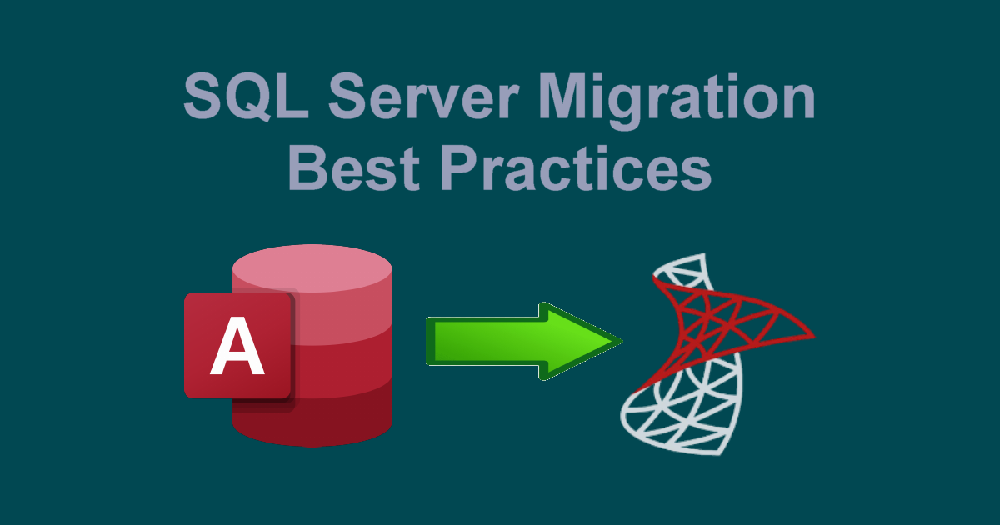

SQL Server Migration Best Practices: Strategies for Transferring Legacy Data Structures into Modern Web Application Backends Without Data Loss
Enterprise systems built on legacy desktop databases (such as Microsoft Access, SQL Server 2008/2012, or local-first file stores) carry decades of mission-critical business intelligence. Migrating these deep-seated schemas to modern web backends without risking data loss, downtime, or corrupting key relations is one of enterprise IT's toughest challenges. At DataCore Systems, we utilize rigorous ETL (Extract, Transform, Load) protocols and phased staging pipelines to ensure smooth transitions from legacy data stores into modern web application engines.

01. Comprehensive Schema Mapping & Data Type Alignment
Legacy databases often rely on deprecated data types (such as text, image, or unconstrained strings) that do not map directly to modern web backends like SQL Server 2022, PostgreSQL, or web APIs.
-
Data Type Normalization: Converting legacy types to standard modern representations (
VARCHAR(MAX),VARBINARY(MAX), orDATETIME2) prevents truncation and timezone conversion bugs. - Foreign Key Preservation: Auditing and reconstructing implicit relational constraints that were previously managed at the application UI level rather than the database level.
- Nullability & Default Audits: Identifying orphaned records and missing default values before executing migration scripts to maintain referential integrity.
02. Staged ETL Pipelines & Dual-Write Verification
A direct "big bang" cutover presents significant operational risk. Establishing an intermediate staging environment allows for non-destructive data validation and continuous dual-writing during live transition periods.
- Isolated Staging Environment: Extracting data into a dedicated sandbox database where transformation scripts run and report validation errors safely.
- Incremental CDC (Change Data Capture): Tracking ongoing modifications in the legacy system so that delta updates stream continuously to the web backend prior to cutover.
- Automated Checksum Validation: Running row-count and binary hash verification scripts to confirm 100% data fidelity between source and target systems.
03. Performance Tuning & Index Optimization for Web Queries
Desktop or legacy databases handle index execution differently than web applications serving hundreds of concurrent user requests over HTTP/REST interfaces.
- Clustered Index Refactoring: Rebuilding primary keys to eliminate index fragmentation during high-volume insert/update workloads.
- Covering Indexes for Web Endpoints: Creating non-clustered indexes specifically aligned with API payload queries to ensure sub-10ms response times.
- Stored Procedure Optimization: Converting embedded client-side SQL statements into parameter-bound server procedures to eliminate SQL injection and boost execution speed.
04. Migration Strategy Comparison
| Migration Strategy | Risk Level | Data Loss Prevention & Uptime |
|---|---|---|
| Direct "Big Bang" Cutover | High (Requires system downtime) | High risk of unforeseen schema errors during live window |
| Phased Module Migration | Moderate (Dual maintenance needed) | Controlled rollouts module by module with minimal risk |
| CDC-Driven Staged Sync | Low (Zero downtime) | 100% Verified checksum matching with instant fallback protection |
Planning a database migration for your legacy application? At DataCore Systems, we specialize in seamless SQL Server migrations, database restructuring, and resilient web backend architectures.
Get in Touch